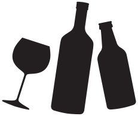
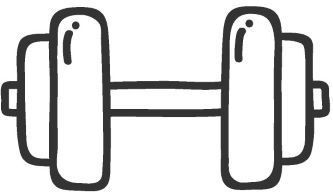

Esplorando le statistiche: fattori di rischio e tendenze
delle morti premature tra i giovani italiani
Tra i fattori più importanti che influenzano lo stile di vita di un individuo si inseriscono:
Droga
|

Alcol
|
Fumo
|
Dieta
|

Attività fisica
|
Qualità del sonno e stress
|
Secondo l'Istat, la fascia di età presa in considerazione quando si parla di giovani è quella compresa tra i 15-34 anni.
Rientrano infatti in questa categoria:
Ne sono esclusi:
Il periodo di tempo preso in considerazioni nei dataframe ISTAT sulle cause di decesso si protrae dal 2015 al 2020.
I restanti dataset riportano dati relativi agli anni 2021 e 2022.
Il presente articolo ha come obiettivo un'analisi approfondita sulle cause principali di decesso tra i giovani in Italia, con particolare attenzione ai fattori che incidono sulla loro salute. Attraverso l'utilizzo di dati statistici provenienti dall'ISTAT (Istituto Nazionale di Statistica), sono stati esaminati diversi indicatori, tra cui le cause di morte più comuni, le abitudini relative al fumo e all'alcol, nonché lo stile alimentare, per fornire una panoramica completa basata sui dati che possa contribuire a una maggiore consapevolezza riguardo alla salute dei giovani italiani.
Infine, è stato realizzato un confronto con un altro Paese dell'Unione Europea per studiare differenze e somiglianze e individuare le criticità che richiedono un intervento immediato da parte delle autorità competenti per aiutare i giovani a perseguire uno stile di vita sano ed equilibrato.
Di seguito, i dataset utilizzati e le relative metodologie di elaborazione:
1. Dataset sulle principali cause di decesso in Italia:
l'ISTAT raccoglie e pubblica dati sulle cause di morte in Italia attraverso il Sistema Informativo di Mortalità (SIM). Questi dati includono informazioni dettagliate sulle cause specifiche di morte, suddivise in diverse categorie (ad esempio malattie cardiache, incidenti stradali, suicidi, ecc...).
I dati sono stati analizzati relativamente ai giovani, definendo la fascia di età specifica in base alle definizioni fornite dall'ISTAT. L'arco temporale coperto va dal 2015 al 2020.
I dataset sono 2: cause decessi per età (dimensione: 27000 records ca.) e cause decessi per regione (dimensione: 156000 records ca.).
2. Dataset sull'abitudine al fumo in Italia:
per comprendere l'impatto del fumo sulla salute dei giovani sono stati utilizzati dataset relativi all'abitudine al fumo in Italia. Questi dati includono informazioni sul numero di fumatori, suddivisi per fascia d'età, genere e regione. Sono stati esaminati i dati per la fascia di età dei giovani, al fine di identificare eventuali correlazioni tra il fumo e le principali cause di morte. I dati sono relativi agli anni 2021 e 2022.
La dimensione del dataset è di 24 records.
3. Dataset sull'abitudine all'alcol in Italia:
per valutare l'influenza dell'abuso di alcol sulla salute dei giovani, sono stati considerati dati sull'abitudine all'alcol in Italia. Anche queste informazioni sono suddivise per fascia d'età, genere e regione e anche in questo caso sono stati analizzati i dati relativi ai giovani per individuare eventuali legami tra il consumo di alcol e le cause di morte più comuni. Il dataset riguarda il 2021 e 2022.
I dataset sono 2: abitudine all'alcol per età (dimensione: 25 records) e abitudine all'alcol per regione (dimensione: 39 records).
4. Dataset sullo stile alimentare in Italia:
per esaminare l'impatto dello stile alimentare sulla salute dei giovani, sono stati considerati dati relativi alle abitudini alimentari in Italia. Anche in questo caso i dati risalgono al 2021 e 2022.
La dimensione complessiva dei dataset è di 120 records.
5. Dataset sulle principali cause di decesso in Spagna (fino al 2022): attraverso i dati forniti da l'Instituto Nacional de Estadística, noto con l'acronimo INE (organismo che coordina i servizi statistici della Spagna)
è stato sviluppato un confronto, per individuare differenze e somiglianze nelle principali cause di decesso tra i giovani italiani e spagnoli. I dati partono dal 2015 e arrivano fino al 2022.
La dimensione del dataset è di 340560 records.